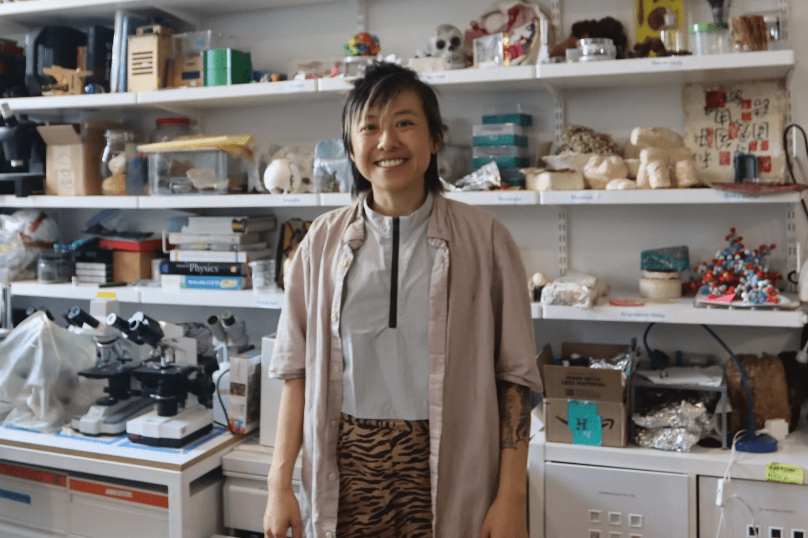

About
.jpg)

.png)
Caroline Chou is a Taiwanese-American creative scientist and multidisciplinary artist with a background in community organizing. From growing up among California’s redwoods to studying microbiology at UC Berkeley and exploring fungi-insect communication at NYU Gallatin, Caroline has carried a lifelong curiosity about how living systems communicate and connect. From the macro to the micro, she sees the shared principle of gathering to exchange and sustain. This recognition shapes her practice of community engagement as a vital, active part of the research process itself. Her work explores interconnected ecological relationships and how they change over time in tandem with cultural practices. She transforms complex scientific concepts into tangible and whimsical experiences for the public. Most recently she hosted peanut-eating competitions to gather source material for Communing which turned a playful community event into an entry point for introducing biomaterials to the public. Another event she produced included the Off-Broadway musical, Microbes! The Musical. Based on her research on fungi-insect relationships, Caroline wrote, directed, and self-produced Microbes! to encourage the public to reimagine relationships with and within the microbial world. As an artist-in-residence at Genspace, she continued her fungi-insect research and began exploring themes of being, becoming, and reincarnation in her piece With(in). Caroline is woring towards her MFA with Coalesce Lab at University at Buffalo, continuing her research on microbial chemical communication alongside artistic experimentation in sculpture and installation.